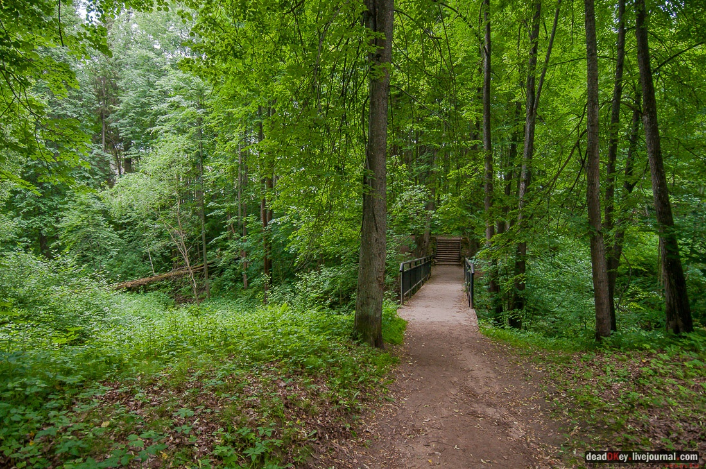
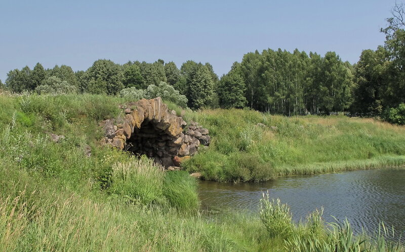
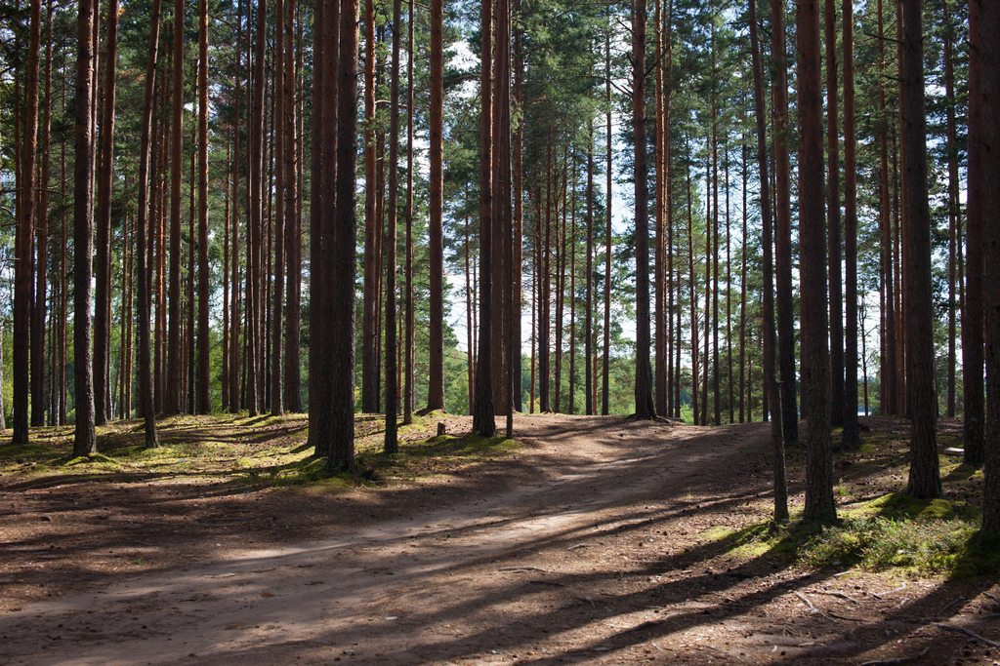
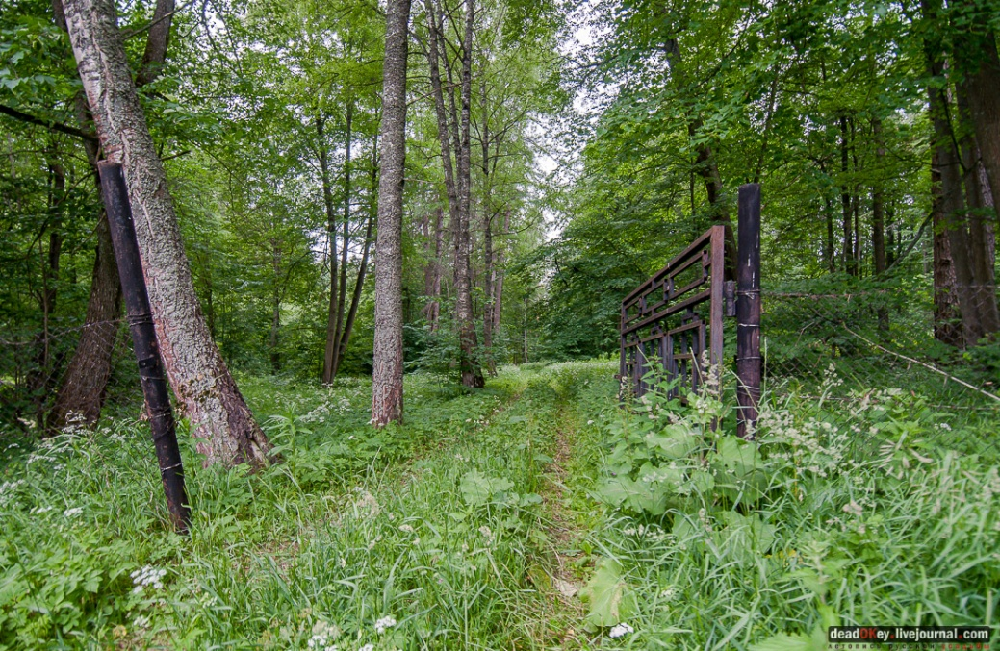
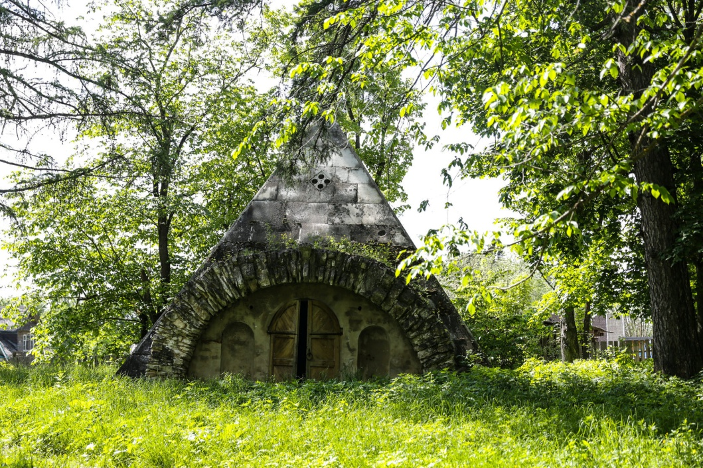

Природа
ТОРЖОК
1. Парк в усадьбе Грузины
На левом берегу речки Жаленки раскинулся пейзажный парк, созданный уроженцем Тверской губернии, архитектором Николаем Александровичем Львовым. В глубине парка затерялась старинная помещичья усадьба Грузины, некогда роскошное имение с господским домом, церковью и хозяйственными постройками, ныне заброшенное. В 1778–1780 годах по просьбе Марка Полторацкого его сосед, уроженец Тверской губернии, известный архитектор Н. А. Львов облагородил прилегающую к господскому дому территорию, спроектировав и разбив на ней большой живописный пейзажный парк с прудами и устроенными на них островками с резными беседками и фигурными мостиками. Изюминкой парка стал мостик из валунов, переброшенный через Жаленку. Для его создания русло реки отвели в сторону, и, уложив плотно друг к другу большие камни, вернули Жаленку в прежнее русло. Вода, вымыв песок из-под валунов, образовала оригинальный висячий мостик, ставший украшением имения.
2. Сосновый бор у деревни Горощино
Уникальная роща, особо охраняемый объект
3. Парк в усадьбе Митино

Дмитрий Дмитриевич Романов (1851 - 1916) – последний владелец усадьбы. В
последние годы любимым занятием Д.Д. Романова были работы в парке. Для
митинского парка "он выписывал издалека невиданные под тверским небом
деревья вроде канадской березы, не с пятнистым, а с чисто "белым, как
сметана" стволом". Митинский ручей когда-то шумел каскадом на прудах,
впадая в Тверцу. Ложа прудов и берега были выложены камнем.
Вид на грот от Тверцы, дом прячется за растительностью. Склон перед домом был превращен в скальный парк, на террасе которого устроили небольшой пруд-купальню. Дно пруда и лестница схода были выложены белым камнем, берега укреплялись валунным камнем.
4. Парк в усадьбе Никольское – Черенчицы
В своем имении Н.А.Львов стремился создать мир гармонии, где духовные и практические потребности владельцев усадьбы были бы удовлетворены в наибольшей степени. Все здания в Никольском-Черенчицах построены по проектам и под непосредственным наблюдением самого Н.А. Львова, здесь он смог на практике применить все свои инженерные разработки, например, устроил подземный водопровод с водоподъемной машиной. В усадьбе был прекрасный парк и искусственные пруды.